最近写课程项目，涉及数据库的操作，于是开始学习hibernate。
hibernate挺好配置的，但是网上博客什么的，个人感觉都说的太多了，给我一种很麻烦的感觉，但是没办法啊，得用啊！也只好慢慢看那些博客和官方文档（我自己英语太差…没怎么看懂…可能我看的姿势不对吧…
仅限个人理解，望指教~
第一种：在新建项目时，就添加Hibernate
第一步：新建项目
我新建的是一个java web项目…可以换其他的，这个无所谓╮(╯_╰)╭
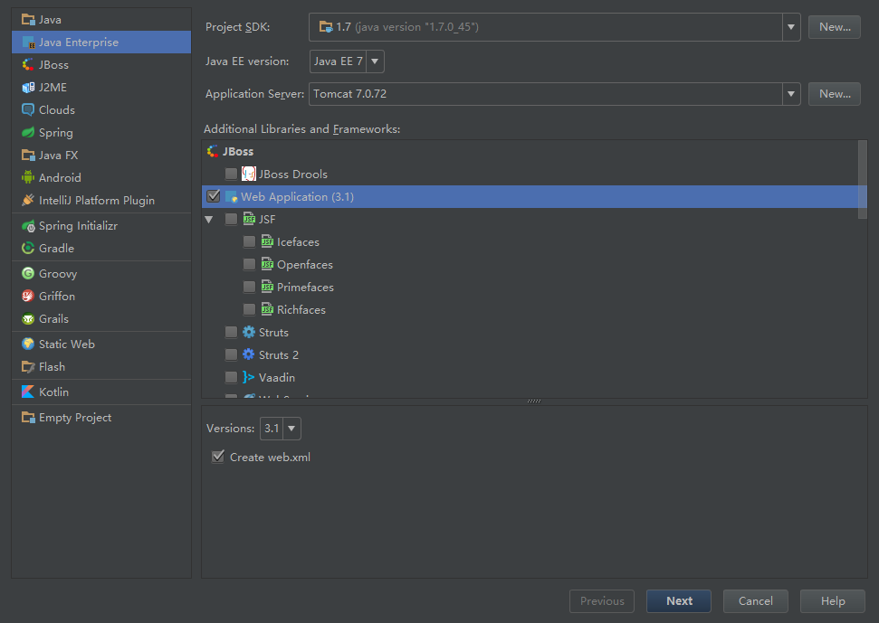
新建项目的时候，记得在下方勾选Hibernate，勾选之后，在下方可以选择Hibernate library，我选择的是下载。
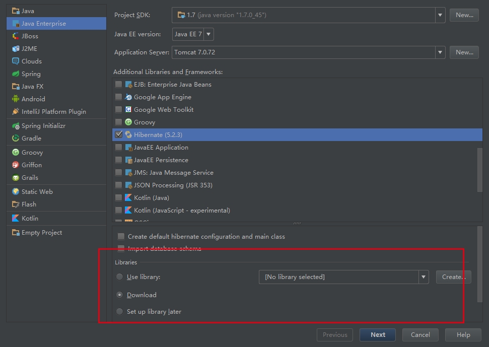
第二步：添加配置
在 Project Structure中选择Modules，点击Hibernate，选择右边的加号，添加hibernate.cfg.xml文件。（不知道为什么…同样的截图工具，这个界面这么模糊╮(╯_╰)╭）
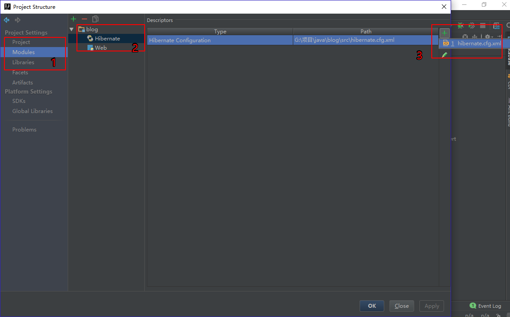
直接Ok，选择默认的就行了 ，最后apply，ok就好~
可能Problem有个1，如图所示，点进去，点击fix，add就行了~
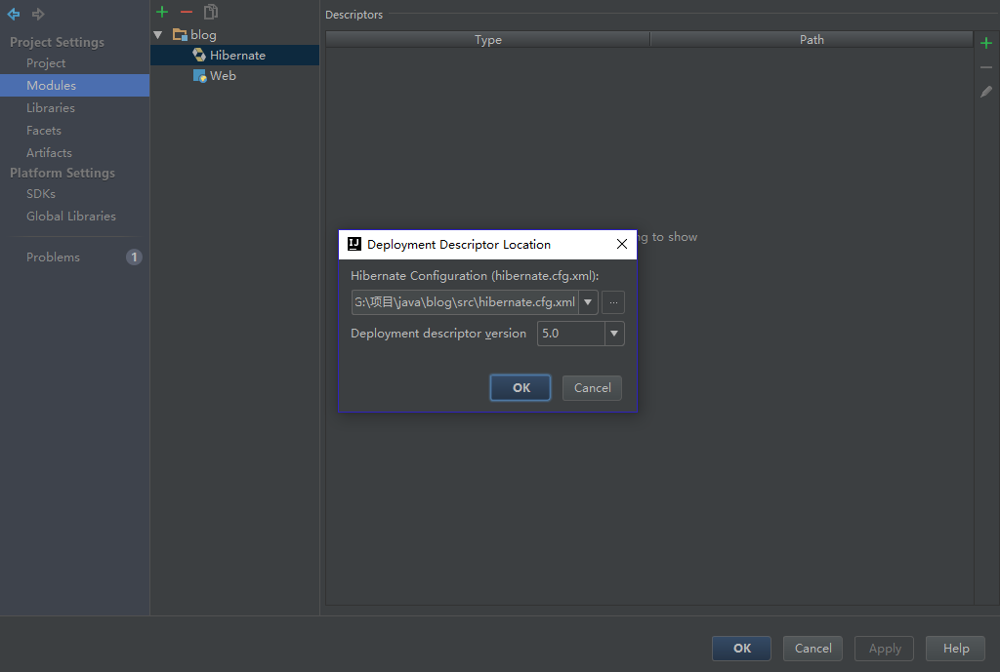
如此之后，你会发现，项目下面多了一个lib文件夹，里面是hibernate的jar包。接下来，就是添加数据库了。我用的是本地mysql（其他数据库，就自行解决吧~），一定要记得先启动…
在界面右侧，有一个Database，点击。如果没有，就在View->Tool Windows->Database。
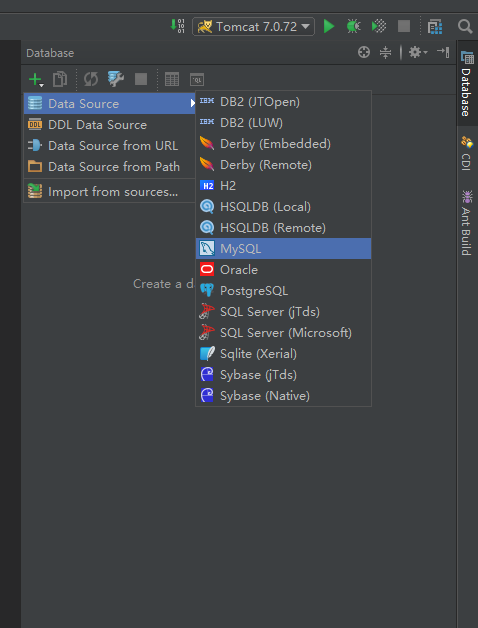
选择MySQL，进去之后， 填写数据库名称，用户名，密码什么的~最后test，成功界面如下~
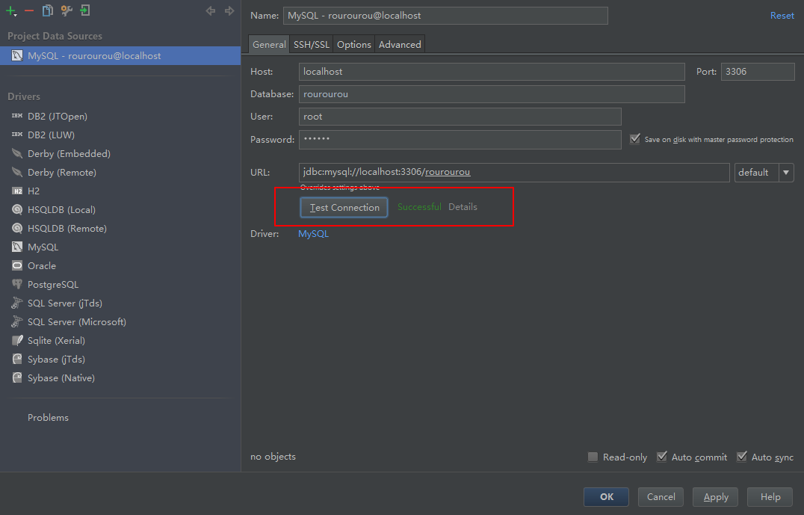
点击Apply之后，可能会让你输入密码，这个是你以前设置的密码，如果不记得，就选择reset吧~
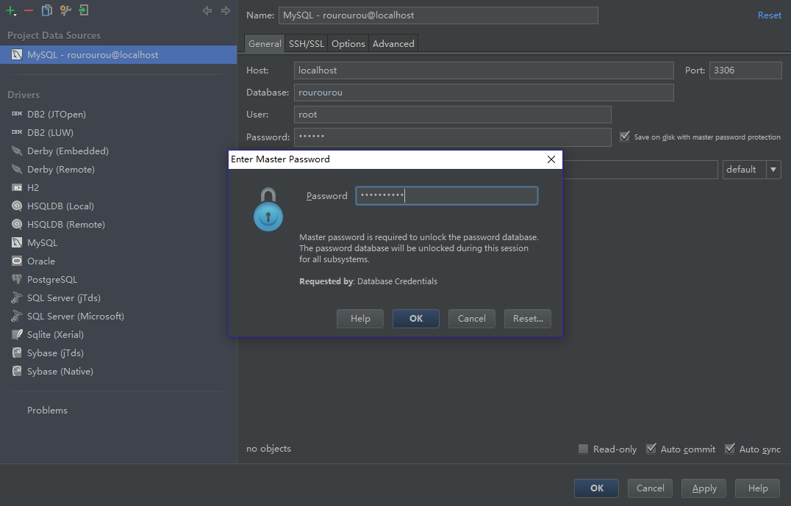
到此，点击src里面的hibernate.cfg.xml如下进行配置~ 小红框里面那一项，是因为本人电脑上不添加会报错…但是有些人不会..可能是血统原因吧…黑脸.jpg
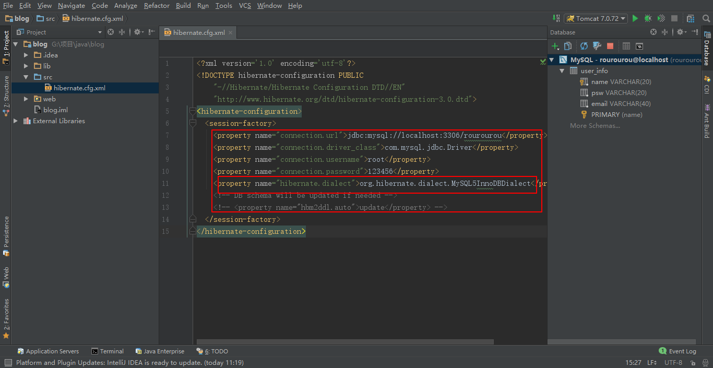
1 | <property name="connection.url">jdbc:mysql://localhost:3306/TABLE_NAME</property> |
大写处，根据自己的情况填写…
此时，可能你会发现com.mysql.jdbc.Driver会报错…那是因为你项目中没有添加mysql-connector包，进行下载,下载之后，可以通过添加jar包进行添加，也可以直接把jar包复制进去，再右击add as library…
好了，此时，差不多也配置完了~
第三步：新建entity
界面左侧，有一个persistence，如果没有，跟上面database同样的方法，可以找到…点击之后，右击generate persistence mapping -> by database schema
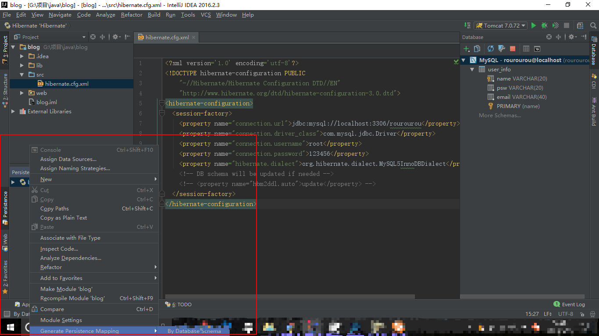
进去之后， Package代表entity类会放在哪个文件夹下，如果没有，就随便写一个，我写的hibernate（红框1），可能会显红色，但是无所谓，最后idea会帮你新建的，然后选择你要使用的表（红框2），最后如下图红框3所示，进行勾选
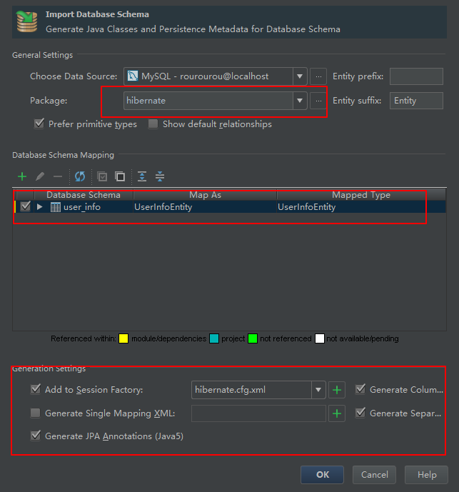
OK之后，界面如下
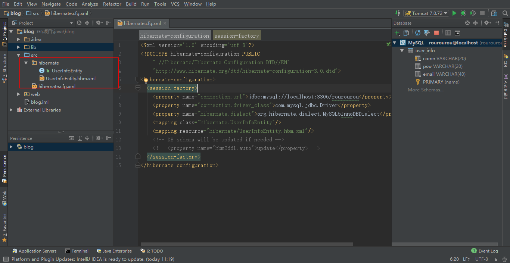
此时，已经配置完了~具体使用，下篇再讲~
第二种：新建项目之后，进行添加Hibernate
新建项目，不勾选Hibernate。
项目中，Project Structure -> Modules -> + -> Hibernate，之后，就同上了~
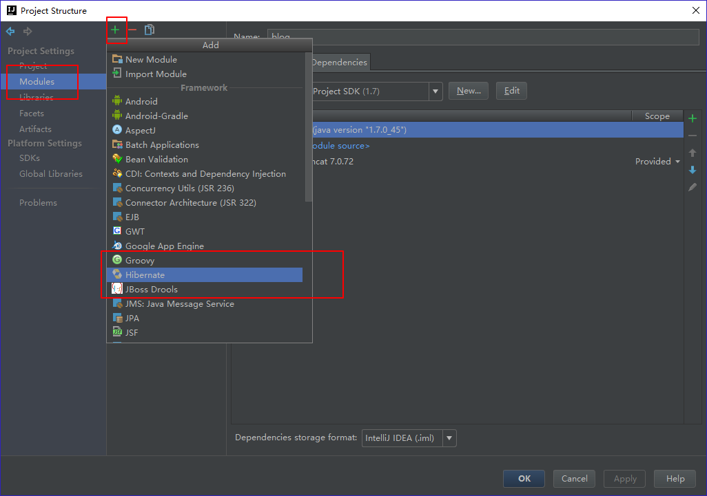
好，到此结束~O(∩_∩)O~~